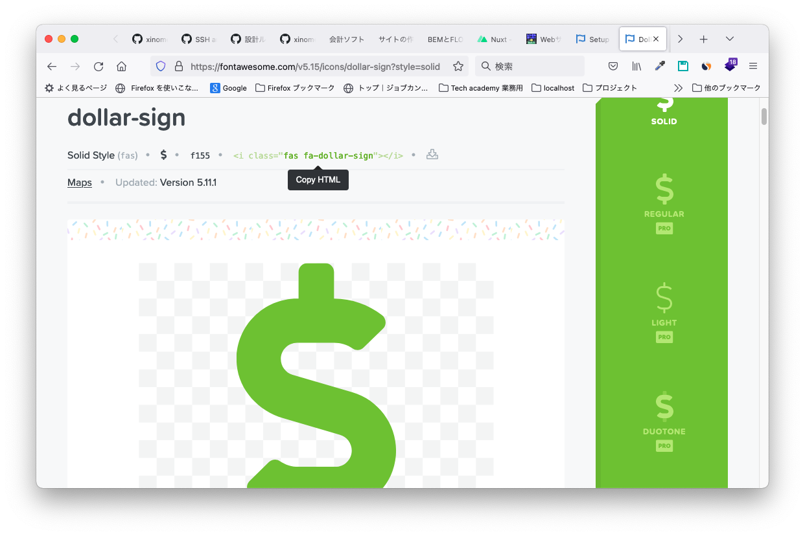

ファイル構成
ファイル構成は次のようになっています。（2021/10/23時点）
「main.js」を通じて、<header class="navbar header">の中に共通ヘッダーが読み込まれます。
| css/ | スタイルシート格納 | |
| reset.css | ブラウザ間の書式リセット用CSS ※コアファイルのため編集NG | |
| style.css | 全ページ共通用CSS | |
| ***.css | 各ページ用CSS | |
| fonts/ | フリーフォント格納用 | |
| ***.ttf | フリーフォントファイル | |
| images/ | 画像格納用 | |
| ページ名/[画像] | ページ名ごとの使用ファイル png/svg/jpg/gifなど | |
| js/ | Javascript格納 | |
| main.js | 全ページ用JS | |
| index.html | トップページ | |
| header.html | 全ページ共通ヘッダーhtml | |
| ***.html | 各ページ用html |
新規ページの作り方
基本的には既存のページからコピペで問題ないと思います。
CSSは「reset.css」「style.css」以外は自由にカスタム可能ですが、どのページからの参照が把握できるように
「ページ名.css」などわかりやすいネーミングをするのがおすすめです。
ページ毎のコンテンツを編集するときは、<main>配下の<article>内をカスタムします。
CSSスタイル名の付け方
現時点では、構成要素に対して
[構成要素名]__[子要素]__[孫要素]-[補足要素]
のようなスネークケース準拠の記法でクラス名を付けています。
例）header.html 「.navbar__nav__menu」
→ナビゲーション > ナビ > メニュー
フリーアイコンの使用
現在、FontAwesomeを適用しています。(形式：SVG with CDN)
新しく追加したい場合は、メニュー「Icons」から任意のワードで検索後、アイコンページの<i>タグをコピペして使用できます。
